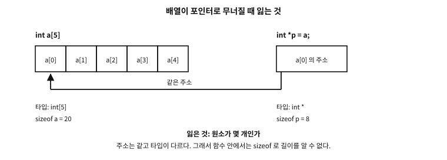
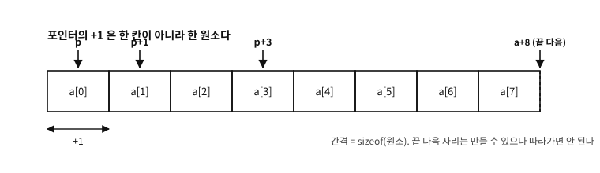

39 배열
먼저 알아야 할 것
돌아보기
12장에서 캐시 라인은 “이웃 예순네 칸을 상자째” 나른다고 했고, 배열(array)을 차례로 훑는 코드가 빠른 이유가 그것이라 했다. 그러면 “배열”이란 기억의 눈으로 정확히 무엇인가?
답. 같은 타입의 칸들이 빈틈없이 이웃하여 늘어선 것 — 그것이 전부다. int a[5]는 int 다섯 개가 연속된 주소에 나란히 놓인 것이고, 그래서 첫 칸의 주소와 타입만 알면 나머지 위치가 전부 계산된다(번 원소 = 시작 주소 + 칸 크기). 이 “계산 가능한 이웃”이라는 성질이 배열의 강점(즉시 접근, 캐시 친화)이자 위험(경계 계산 착오)의 뿌리다.
이 장의 필요성과 맥락
char line[100] 이 여기서 갚아진다. 7부가 「기억」인 이유가 이 장부터 분명해진다.이 장이 끝나면
char line[100] 외상이 여기서 청산된다.이 장에서 답할 질문
- 크기를 적지 않은
int a[];같은 선언도 보았다. 그것도 배열인가? - 왜 이렇게 만들었는가? 정수는 대입되는데 배열은 안 되는 것이 어색하다.
- 「연속」은 가상 주소에서만인가, 실제 물리 기억에서도인가?
- 왜 이렇게 정했는가 — 그냥 바이트 단위로 더하게 두면 더 단순하지 않은가?
- 그러면 포인터 매개변수는 전부
[static 1]로 적는 편이 좋은가? - 경계를 어기면 컴파일러가 잡아 주지 않는가?
39.1 배열이란 무엇인가 — 같은 것이 여럿일 때#
문법보다 먼저, 배열이 왜 있어야 하는지부터 보자.
한 반 학생 서른 명의 시험 점수를 다룬다고 하자. 지금까지 배운 것만으로는 변수를 서른 개 만들어야 한다.
int score1, score2, score3, /* … */ score30;이렇게 해 놓고 평균을 내려면 score1 + score2 + … + score30 을 손으로 다 적어야 한다. 반복문(33장)이 있어도 소용이 없다 — score1, score2 는 이름이 다를 뿐 서로 아무 관계가 없는 변수라서, 「i 번째 점수」라고 가리킬 방법이 없기 때문이다. 학생이 서른한 명이 되면 코드를 고쳐야 하고, 「17번 학생의 점수」를 입력으로 받아 찾는 일은 아예 할 수 없다.
필요한 것은 이름 하나에 번호를 붙여 부르는 방법이다. 수학이 이미 그렇게 한다. 수열을 로 적고 「」라고 쓰면 에 따라 다른 항을 가리킨다. 이름은 하나이고, 무엇을 가리키는지는 아래 첨자 가 정한다. C의 배열(array)이 바로 그것이다.
int score[30]; /* 정수 서른 개 --- 이름은 score 하나 */
score[16] = 87; /* 17번째 학생(번호는 0부터) */
for (int i = 0; i < 30; i++) /* 「i 번째」라고 부를 수 있으니 반복이 된다 */
total += score[i];C가 대괄호 안의 수를 첨자(subscript)라 부르는 것도 수학의 아래 첨자에서 왔다. 배열이 주는 것을 정리하면 셋이다.
| 주는 것 | 그래서 |
|---|---|
| 번호로 부를 수 있다 | 반복문 하나로 전부를 훑는다. 원소가 서른 개든 삼만 개든 코드는 같다 |
| 번호를 계산할 수 있다 | 「입력받은 달의 날수」를 days[month - 1] 한 번으로 찾는다 — 조건문을 열두 번 늘어놓지 않는다 |
| 한 덩어리로 놓인다 | 원소들이 기억에 빈틈없이 줄지어 있어 찾아가기가 곱셈 한 번이고, 캐시가 이웃을 함께 실어 온다(12장) |
표 39.1 — 배열이 주는 것
그리고 C의 배열이 주지 않는 것도 처음부터 알아 두어야 한다. 이 장의 뒷부분과 다음 두 장이 전부 이 목록에서 나온다.
- 배열은 자기 길이를 들고 다니지 않는다. 함수에 넘기는 순간 길이를 잃는다(뒤의 「무너짐」).
- 번호가 범위 안인지 아무도 검사하지 않는다.
score[30]이나score[-1]도 컴파일되고 실행된다. 그 결과가 이 장 끝의 「배열에서 나는 사고들」이다. - 크기는 정해지면 바뀌지 않는다. 실행 중에 늘리려면 46장의 동적 할당이 필요하다.
39.2 엄밀한 정의 — 표준은 배열을 이렇게 적는다#
이제 같은 것을 표준의 말로 정확히 적는다. 배열은 타입의 한 갈래로 정의된다.
“ 배열 타입은 연속으로 할당된(contiguously allocated) 비어 있지 않은 객체 집합을 기술한다 — 원소 타입이라 부르는 특정 멤버 객체 타입의 것들이다. 원소 타입은 배열 타입이 지정될 때 언제나 완전해야 한다. 배열 타입은 원소 타입과 배열 안 원소의 개수로 특징지어진다. 배열 타입은 그 원소 타입에서 파생되었다고 하며, 원소 타입이 T 이면 배열 타입을 「T 의 배열」이라 부르기도 한다.1 ”
한 문장씩 풀면 배열에 관한 사실 대부분이 여기서 나온다.
| 정의의 낱말 | 뜻과 귀결 |
|---|---|
| 객체 집합 | 배열은 객체이고(36장), 원소 하나하나도 객체다. int a[5] 에는 객체가 여섯 있다 — 배열 a 하나와 원소 a[0]~a[4] 다섯 |
| 연속으로 할당된 | 원소들이 빈틈없이 붙어 있다. 그래서 a[i] 의 자리가 곱셈 하나로 나온다. 뒤의 「원소와 원소 사이에는 빈자리가 없다」에서 따로 본다 |
| 비어 있지 않은 | 원소가 적어도 하나다. int z[0]; 은 표준 C가 아니다(§6.7.7.3p1 「0보다 커야 한다」) |
| 원소 타입은 완전해야 | 크기를 아는 타입이어야 원소를 늘어놓을 수 있다. void v[3] 도, 함수의 배열도 안 된다. 배열의 배열은 된다 — 다음 장의 주제다 |
| 원소 타입과 개수로 특징지어진다 | int[3] 과 int[4] 는 다른 타입이다. 개수가 타입의 일부다 |
| 원소 타입에서 파생 | 포인터·함수와 함께 「파생 선언자 타입」의 하나다(§6.2.5p26). 「int 의 배열」, 「int 의 배열의 배열」처럼 쌓아 올린다 |
표 39.2 — 정의의 낱말과 그것이 뜻하는 것
「개수가 타입의 일부」라는 줄이 가볍게 보이지만, 뒤에서 여러 번 돌아온다. sizeof 가 배열 전체의 크기를 알려 주는 것도, &a + 1 이 배열 통째를 건너뛰는 것도(41장), 그리고 함수 매개변수에서 그 개수가 사라지는 것도 모두 이 사실을 축으로 돈다.
이 책이 컴파일러에게 정의의 경계를 물어 보았다. 원소가 0개인 배열은 두 컴파일러 모두 확장이라고 짚는다.
gcc: warning: ISO C forbids zero-size array ‘z’ [-Wpedantic]
clang: warning: zero size arrays are an extension [-Wzero-length-array]문. 크기를 적지 않은 int a[]; 같은 선언도 보았다. 그것도 배열인가?
답. 배열이지만 아직 완성되지 않은 배열 타입이다. 표준은 크기를 모르는 배열 타입을 불완전 타입(incomplete type)이라 부른다(§6.2.5p27). 크기를 모르니 sizeof 를 물을 수 없고, 그런 변수를 지역 변수로 만들 수도 없다.
완성되는 길은 둘이다. 하나는 초기값이 크기를 정하는 경우다 — int a[] = {2, 7, 1}; 은 원소 셋짜리 배열이 된다(다음 절). 다른 하나는 다른 선언이 크기를 알려 주는 경우다 — 다른 파일에 정의된 배열을 extern int table[]; 로 선언해 쓰는 것이 그렇다 (41장).
39.3 선언과 초기화#
int a[5]; 를 읽는 법은 65장에서 정식으로 다루지만, 지금은 이것으로 충분하다 — 이름 a 는 「int 다섯 개의 배열」이다. 대괄호 안의 크기는 컴파일할 때 값을 아는 정수 상수식이어야 하고, 0보다 커야 한다. (변수를 쓰면 뒤에서 볼 가변 길이 배열이 된다.)
examples/ch38/arr.c
#include <stdio.h>
int main(void)
{
int a[5] = {3, 1, 4, 1, 5};
int sum = 0;
for (int i = 0; i < 5; i += 1) {
sum += a[i];
}
printf("sum: %d\n", sum);
printf("a[2] = %d, *(a + 2) = %d\n", a[2], *(a + 2));
int *p = a; /* 배열 이름이 첫 원소의 주소로 무너진다 */
printf("sizeof a = %zu, sizeof p = %zu\n", sizeof a, sizeof p);
return 0;
}
실행 결과
sum: 14
a[2] = 4, *(a + 2) = 4
sizeof a = 20, sizeof p = 8
int a[5] = {3, 1, 4, 1, 5}; — 타입, 이름, 칸 수, 그리고 중괄호 초기화. 접근은 a[i]이고 번호는 0부터다(첫 원소가 a[0], 마지막이 a[4]). 0부터 세는 이유는 앞의 deepqa가 이미 답했다 — a[i]의 정체가 “시작에서 칸 떨어진 곳”이라서, 첫 원소는 떨어진 거리가 0이다.
초기화에는 몇 가지 꼴이 있고, 각각 표준이 정한 규칙이 따로 있다. 한 시연에 모았다.
examples/ch38/init.c
#include <stdio.h>
#define COUNT(a) (sizeof (a) / sizeof (a)[0]) /* 진짜 배열에만 쓴다 */
static void show(const char *label, const int *v, size_t n)
{
printf("%-22s", label);
for (size_t i = 0; i < n; i++)
printf(" %d", v[i]);
printf(" (%zu elements)\n", n);
}
static int counter[3]; /* 정적 저장 기간 --- 적지 않아도 0 */
int main(void)
{
int full[5] = {3, 1, 4, 1, 5}; /* 다섯 칸을 다 적었다 */
int part[5] = {3, 1}; /* 나머지 셋은 0 */
int sized[] = {2, 7, 1, 8}; /* 크기를 초기값 개수로 정한다 */
int marked[6] = {[4] = 9, [1] = 2};/* 지정 초기화(C99) */
int empty[4] = {}; /* C23: 빈 중괄호는 전부 0 */
puts("[1] initializers");
show("{3, 1, 4, 1, 5}", full, COUNT(full));
show("{3, 1}", part, COUNT(part));
show("[] = {2, 7, 1, 8}", sized, COUNT(sized));
show("{[4] = 9, [1] = 2}", marked, COUNT(marked));
show("{}", empty, COUNT(empty));
show("static, no initializer", counter, COUNT(counter));
puts("\n[2] the array type knows its size");
printf("sizeof full = %zu bytes\n", sizeof full);
printf("sizeof full[0] = %zu bytes\n", sizeof full[0]);
printf("COUNT(full) = %zu\n", COUNT(full));
puts("\n[3] no whole-array assignment: copy element by element");
int copy[5];
for (size_t i = 0; i < COUNT(full); i++)
copy[i] = full[i]; /* copy = full; 은 오류다 */
show("copy of full", copy, COUNT(copy));
puts("\n[4] the first element shares the array's address");
printf("(void *)full == (void *)&full[0] : %d\n",
(void *)full == (void *)&full[0]);
return 0;
}
실행 결과
[1] initializers
{3, 1, 4, 1, 5} 3 1 4 1 5 (5 elements)
{3, 1} 3 1 0 0 0 (5 elements)
[] = {2, 7, 1, 8} 2 7 1 8 (4 elements)
{[4] = 9, [1] = 2} 0 2 0 0 9 0 (6 elements)
{} 0 0 0 0 (4 elements)
static, no initializer 0 0 0 (3 elements)
[2] the array type knows its size
sizeof full = 20 bytes
sizeof full[0] = 4 bytes
COUNT(full) = 5
[3] no whole-array assignment: copy element by element
copy of full 3 1 4 1 5 (5 elements)
[4] the first element shares the array's address
(void *)full == (void *)&full[0] : 1
| 적은 것 | 결과 | 근거 |
|---|---|---|
{3, 1, 4, 1, 5} | 적은 대로 | — |
{3, 1} (다섯 칸에 둘만) | 나머지는 0 | 모자란 원소는 정적 객체처럼 기본 초기화된다(§6.7.11p22) |
int a[] = {2, 7, 1, 8} | 크기가 4로 정해진다 | 크기를 모르는 배열은 초기값이 크기를 정한다(§6.7.11p23) |
{[4] = 9, [1] = 2} | 지정한 칸만 그 값, 나머지 0 | 지정 초기화(C99). 표를 만들 때 순서에서 자유롭다 |
{} (C23), {0} | 전부 0 | 빈 초기화는 기본 초기화다(§6.7.11p11). {0} 은 첫 칸을 0으로, 나머지를 규칙대로 0으로 |
| 초기값이 칸보다 많다 | 진단이 나온다 | gcc·clang 모두 「excess elements in array initializer」 |
| 지역 배열, 초기값 없음 | 정해지지 않은 값(쓰레기) | 자동 저장 기간 객체는 표현이 불확정이다(§6.7.11p11) |
| 정적 배열, 초기값 없음 | 전부 0 | 정적 저장 기간 객체는 기본 초기화된다(같은 문단) |
표 39.3 — 배열 초기화의 꼴과 규칙
마지막 두 줄의 차이가 중요하다. 함수 안에 int a[4]; 라고만 적으면 그 네 칸에는 그 자리를 앞서 쓰던 누군가가 남긴 값이 들어 있다. 시연이 지역 배열을 초기값 없이 찍지 않은 이유가 그것이다 — 찍어 보는 일 자체가 이 장 끝에서 볼 사고의 한 갈래다. 지역 배열은 언제나 초기화해서 시작한다. 전부 0이면 되는 자리라면 = {} 한 마디로 충분하다.
문자 배열을 문자열 리터럴로 초기화하는 꼴(char s[] = "hi";)도 있다. 그 규칙은 문자열과 함께 43장에서 본다.
39.4 배열로 할 수 없는 것 — 통째로 대입·비교·반환#
다른 언어에서 온 사람이 가장 먼저 부딪히는 벽이 여기 있다. C의 배열은 통째로 다룰 수 없다.
| 적어 본 것 | 결과 | 근거 |
|---|---|---|
b = a; | 컴파일 오류 | 배열 타입의 좌변값은 수정 가능한 좌변값이 아니다(§6.3.2.1p1) |
a == b | 컴파일은 되지만 주소를 비교한다 | 두 배열이 모두 첫 원소의 주소로 바뀐 뒤 비교된다 — 내용은 보지 않는다 |
int f(void)[3]; (배열을 돌려주는 함수) | 컴파일 오류 | 함수는 배열 타입을 돌려줄 수 없다(§6.7.7.4p1) |
| 배열을 값으로 넘기기 | 할 수 없다 | 넘기는 순간 첫 원소의 주소로 바뀐다(뒤의 「무너짐」) |
표 39.4 — 배열 통째로는 안 되는 것
컴파일러가 실제로 하는 말이다.
gcc: error: assignment to expression with array type
clang: error: array type 'int[3]' is not assignable
gcc: warning: comparison between two arrays [-Warray-compare]
clang: warning: array comparison always evaluates to false [-Wtautological-compare]
gcc: error: ‘f’ declared as function returning an array
clang: error: function cannot return array type 'int[3]'그러면 배열을 복사하려면 어떻게 하는가. 방법은 셋이다. 원소를 하나씩 옮기거나(시연의 셋째 묶음), 표준 라이브러리의 memcpy 로 바이트를 통째로 옮기거나(70장), 배열을 구조체에 넣는다 — 구조체는 통째로 대입할 수 있으므로 안에 든 배열도 함께 복사된다 (47장). 내용을 비교하려면 원소를 하나씩 비교하거나 memcmp 를 쓴다.
문. 왜 이렇게 만들었는가? 정수는 대입되는데 배열은 안 되는 것이 어색하다.
답. C의 조상에서 물려받은 것이다. C의 바로 앞 언어인 B에서는 배열의 이름이 배열의 첫 칸을 가리키는 포인터 변수였다. 데니스 리치가 C에 진짜 배열 타입을 들이면서도 B의 코드와 습관이 그대로 통하게 하려고 고른 길이, 「배열의 이름은 식 안에서 첫 원소의 주소로 바뀐다」는 규칙이다.2 그 규칙 아래에서 b = a 의 오른쪽은 배열이 아니라 주소가 되므로, 배열 대입은 뜻을 가질 수 없다. 통째로 다루지 못하는 불편과 맞바꾼 것이 주소 하나로 배열을 넘기는 값싼 호출이다.
39.5 원소 수 세기와 순회#
배열의 원소 수는 타입 안에 있으므로 sizeof 로 꺼낼 수 있다. 전체 크기를 원소 하나의 크기로 나누면 된다.
#define COUNT(a) (sizeof (a) / sizeof (a)[0])시연의 둘째 묶음이 그 계산이다 — 20바이트 ÷ 4바이트 = 5. 이 매크로 덕분에 크기를 한 곳(선언)에만 적고, 반복문에서는 i < COUNT(a) 로 쓸 수 있다. 크기를 바꿀 때 고칠 자리가 하나로 준다.
★ 다만 진짜 배열에만 쓴다. 함수에 넘겨진 배열은 이미 포인터라서 같은 식이 엉뚱한 값을 낸다 — 이 장의 매개변수 절과 41장가 그 사고를 다룬다. 다음 표준(C2y)의 초안에는 이 일을 하는 연산자 _Countof 가 들어갔다.3 배열이 아닌 것에는 쓸 수 없도록 되어 있어, 이 매크로의 함정을 언어가 막아 준다.
순회의 관용구는 정해져 있다.
for (size_t i = 0; i < COUNT(a); i++) /* 0 부터, 개수 「미만」까지 */
use(a[i]);세 가지가 모두 의미가 있다. 0에서 시작하는 것은 첫 원소가 0번이라서이고, <(미만) 로 끝내는 것은 마지막 원소가 「개수 − 1」번이라서다. 그리고 첨자의 타입으로 size_t 를 쓰는 것은 그것이 크기와 개수를 담는 타입이기 때문이다(36장). 이 셋 중 하나만 어긋나도 이 장 끝의 사고로 이어진다.
39.6 배열과 포인터 — 무너짐의 진실#
시연의 뒷부분이 이 장의 심장이다. C에서 가장 많은 혼란을 낳은 관계 — 배열과 포인터 — 를 정확히 정리한다.
규칙: 배열의 이름은 대부분의 문맥에서 “첫 원소의 주소”로 무너진다 (decay). 무너진 뒤에 남는 것과 잃는 것을 나란히 놓으면 이렇다.

그림 39.1 — 주소는 같고 타입이 다르다 — 그래서 원소가 몇 개인지가 사라진다.
int *p = a;가 합법인 이유다 — a가 &a[0]이라는 포인터 값으로 읽힌 것이다. 그리고 a[i]라는 표기 자체가 사실 *(a + i)와 뜻이 같은 동의어다(표준도 §6.5.3.2 에서 [] 를 「E1[E2] 는 (*((E1)+(E2))) 와 동일하다」로 정의한다) — 포인터에 정수를 더하면 “그 타입 크기만큼 칸 옆”의 주소가 되고(포인터 산술 — 38장의 규칙들이 여기 걸린다), 그것을 역참조한 것이 인덱스 접근이다. 시연의 a[2] == *(a + 2)가 그 확인이다.
흔한 오해. “배열은 포인터다”
sizeof a는 20 (int 5칸의 총 크기), sizeof p는 8(주소 하나의 크기, 36장). 무너짐이 일어나지 않는 대표 문맥이 바로 sizeof라서 이 차이가 보인다 — 26장의 fgets(line, sizeof line, stdin)이 그릇 크기를 옳게 잰 것도 이 덕분 이다. 한 가지 파급이 중요하다: 배열을 함수에 “넘기면” 무너진 주소만 복사되므로(34장), 함수 쪽에서는 sizeof로 크기를 알 수 없다 — 그래서 C 함수는 배열과 길이를 별도 인자로 함께 받는 것이 관행이다. 8장에서 본 “길이를 데이터 곁에 두는” 표현 방식들의 문제의식이, C 함수 경계에서 이렇게 재현된다.39.7 원소와 원소 사이에는 빈자리가 없다#
포인터 산술로 넘어가기 전에 못박아 둘 사실이 하나 있다. 방금 a[i] 를 「시작에서 칸 떨어진 곳」이라고 읽었는데, 그 셈이 성립하려면 칸들이 빈틈없이 붙어 있어야 한다. 실제로 그렇다 — 그리고 그것은 관행이 아니라 이 장 첫머리에서 읽은 표준의 정의 자체다. 정의의 「연속으로 할당된」(contiguously allocated)이 그 근거다.
「연속으로 할당된」이 하는 말은 셋이다.
| 따라 나오는 것 | 그래서 |
|---|---|
| 원소 사이에 패딩이 없다 | &a[i+1] - &a[i] 는 언제나 정확히 1이고, 바이트로는 sizeof a[0] 다 |
| 전체 크기가 정확히 원소 크기의 배수 | sizeof a == sizeof a[0] * 칸 수. 이 등식이 흔들리지 않으므로 칸 수를 이렇게 센다 — sizeof a / sizeof a[0] |
| 주소 계산이 곱셈 하나 | a[i] 의 자리는 「시작 + i × 원소 크기」. 기계가 첨자 접근을 싸게 할 수 있는 이유이자, 캐시가 이웃 원소를 함께 실어 오는 이유다(12장) |
표 39.5 — 원소가 붙어 있다는 사실에서 따라 나오는 것
구조체와 다른 점이 여기 있다. 구조체는 멤버 사이에 빈자리가 생길 수 있지만 (48장), 배열은 원소 사이에 빈자리가 없다. 그럼 구조체의 배열은 어떻게 되는가 — 원소 사이에 빈자리가 없어야 하니, 구조체 자신의 크기가 정렬의 배수가 되도록 꼬리에 패딩이 붙는다. 그 이야기는 구조체를 배운 뒤 48장에서 그림과 함께 본다.
문. 「연속」은 가상 주소에서만인가, 실제 물리 기억에서도인가?
답. 프로그램이 보는 주소 공간에서 연속이다. 그것이 표준이 말하는 전부이고, 실용적으로도 그것으로 충분하다 — 우리가 쓰는 주소가 그 주소이기 때문이다.
물리 기억에서는 다를 수 있다. 큰 배열은 여러 쪽(page)에 걸쳐 놓이고, 쪽들은 물리적으로 흩어져 있을 수 있다(12장의 가상기억). 그래도 프로그램에게는 한 줄로 보이므로 첨자 계산은 그대로 맞는다. 성능에는 영향이 있다 — 쪽 경계를 넘을 때마다 주소 변환이 한 번 더 필요하고, 그것이 TLB(translation lookaside buffer) 이야기였다.
39.8 포인터의 덧셈은 보통의 덧셈이 아니다#
방금 a[i]가 *(a + i)라고 했다. 그러면 a + 2는 정확히 무슨 값인가? 주소에 2를 더한 것이라면 “2바이트 옆”이어야 할 텐데, 실제로는 int 두 칸 옆, 곧 8바이트 옆이다. 포인터 산술은 가리키는 타입의 크기를 곱해서 움직인다.

그림 39.2 — +1 이 건너뛰는 폭은 가리키는 타입의 크기다.
이 규칙을 정확히 적으면 이렇다.
| 수식 | 뜻 | 결과 타입 |
|---|---|---|
p + n, n + p | p가 가리키는 타입 크기의 n배만큼 앞으로 | p와 같은 포인터 타입 |
p - n | 같은 크기만큼 뒤로 | 같음 |
p - q | 두 주소 사이에 원소가 몇 개 들어가는가 | ptrdiff_t(부호 있는 정수) |
p++, ++p, p += n | 위와 같은 규칙으로 옮긴 뒤 대입 | 같음 |
표 39.6 — 포인터 산술의 네 가지 꼴
★ 그리고 이 표가 전부다. 포인터가 낄 수 있는 덧셈·뺄셈의 꼴은 넷뿐이고, 나머지는 문법 오류다. 표준이 그것을 조건으로 못박아 두었다.
“ 덧셈에서는 두 피연산자가 모두 산술 타입이거나, 한쪽이 완전 객체 타입에 대한 포인터이고 다른 쪽이 정수 타입이어야 한다. …
뺄셈에서는 다음 중 하나라야 한다 — 둘 다 산술 타입이거나, 둘 다 호환되는 완전 객체 타입에 대한 포인터이거나, 왼쪽이 완전 객체 타입에 대한 포인터이고 오른쪽이 정수 타입이거나.(§6.5.7) ”
| 꼴 | 결과 | 되는가 |
|---|---|---|
포인터 + 정수 | 포인터 | 된다 |
정수 + 포인터 | 포인터 | 된다 — 덧셈은 자리를 가리지 않는다 |
포인터 - 정수 | 포인터 | 된다 |
포인터 - 포인터 | ptrdiff_t | 된다 — 같은 배열 안일 때만 |
정수 - 포인터 | — | ★ 안 된다 — 뺄셈은 왼쪽이 포인터여야 한다 |
포인터 + 포인터 | — | 안 된다 — 어떤 조합에도 없다 |
포인터 *·/·% | — | 안 된다 |
표 39.7 — 포인터가 낄 수 있는 연산과 없는 연산
★ 덧셈과 뺄셈의 비대칭을 눈여겨보라. 5 + p 는 되는데 5 - p 는 안 된다. 덧셈은 「한쪽이 포인터」라고만 요구하지만, 뺄셈은 「왼쪽이 포인터」라고 적혀 있기 때문이다. 뜻을 생각하면 당연하다 — 「주소에서 다섯 칸 뒤」는 말이 되지만 「5 에서 주소를 뺀 것」은 말이 되지 않는다.
이 책이 컴파일러에게 물어 확인했다. 네 가지 금지된 꼴이 각각 이렇게 거절된다.
| 적어 본 것 | GCC 의 대답 |
|---|---|
5 - p | invalid operands to binary - (have 'int' and 'int *') |
p + q | invalid operands to binary + (have 'int *' and 'int *') |
v + 1 (void *) | pointer of type 'void *' used in arithmetic |
f + 1 (함수 포인터) | pointer to a function used in arithmetic |
표 39.8 — 금지된 꼴에 대한 GCC 의 대답
뒤의 둘이 표준 조문의 「완전 객체 타입에 대한 포인터」라는 단서에서 나온다. void 는 완전 타입이 아니고(27장), 함수 타입은 객체 타입이 아니다. 그래서 둘 다 산술의 자격이 없다 — gcc·clang 이 확장으로 1바이트 단위 계산을 봐 주지만 -pedantic-errors 를 켜면 오류가 된다.
즉 포인터에 정수를 더하는 일은 “주소라는 수에 그 수를 더하기”가 아니라 “칸 단위로 세기”다. char *에서만 1이 1바이트이고, int *에서 1은 4바이트, struct point *에서 1은 그 구조체 하나의 크기다.
문. 왜 이렇게 정했는가 — 그냥 바이트 단위로 더하게 두면 더 단순하지 않은가?
답. 세 가지 이유가 겹친다.
첫째, 이것이 배열을 문법 없이 만들어 준다. a[i]를 *(a + i)로 정의할 수 있는 것은 덧셈이 원소 단위이기 때문이다. 만약 바이트 단위였다면 배열 접근을 쓸 때마다 *(a + i * sizeof *a)라고 적어야 했을 것이고, 원소 타입을 바꿀 때마다 모든 접근을 고쳐야 했을 것이다. C가 배열 접근을 위한 특별한 기계장치 없이도 배열이 성립하는 비결이 이 규칙 하나다.
둘째, 타입이 이미 크기를 알고 있다. 3장의 후렴구를 기억하자 — 기억에는 경계가 없고, 몇 바이트를 한 덩어리로 볼지는 읽는 쪽이 정한다. 포인터의 타입이 바로 그 “읽는 쪽의 결정”이다. 그 결정을 이미 들고 있는 값에게 이동까지 맡기는 것이 자연스럽다.
셋째, 기계도 그렇게 움직인다. 대부분의 CPU에 “기준 주소 + 인덱스 × 크기”를 한 번에 계산하는 주소 지정 방식이 있다. 원소 단위 산술은 그 명령에 그대로 대응한다 — 2장에서 본 “C는 기계를 감추지 않았다”의 또 다른 사례다.
examples/ch38/ptrmath.c
/* 포인터 산술은 바이트가 아니라 "칸" 단위로 움직인다. */
#include <stddef.h>
#include <stdio.h>
struct point { int x, y; };
int main(void)
{
char c[4];
int a[8] = {0, 10, 20, 30, 40, 50, 60, 70};
double d[4];
struct point s[4];
/* ── ① 같은 +1 인데 움직인 폭이 다르다 ─────────────────────── */
printf("type sizeof (p+1) - p bytes\n");
printf("char %2zu %td\n",
sizeof c[0], (char *)(c + 1) - (char *)c);
printf("int %2zu %td\n",
sizeof a[0], (char *)(a + 1) - (char *)a);
printf("double %2zu %td\n",
sizeof d[0], (char *)(d + 1) - (char *)d);
printf("struct point %2zu %td\n",
sizeof s[0], (char *)(s + 1) - (char *)s);
/* 바이트 단위로 움직이려면 문자 포인터로 캐스트한다 */
int *p = a;
printf("\np + 1 points at %d\n", *(p + 1));
printf("(char*)p + 1 is the second byte of a[0] (dereference it and you get a piece of the representation, not a value)\n");
/* ── ② 포인터 뺄셈은 원소 개수를 준다 ──────────────────────── */
ptrdiff_t gap = &a[4] - &a[1];
printf("\n&a[4] - &a[1] = %td (elements, not bytes)\n", gap);
printf("counted in bytes = %td\n",
(char *)&a[4] - (char *)&a[1]);
/* ── ③ 첨자는 산술의 동의어다 ──────────────────────────────── */
printf("\na[3] = %d, *(a + 3) = %d, *(3 + a) = %d, 3[a] = %d\n",
a[3], *(a + 3), *(3 + a), 3[a]);
/* ── ④ 마지막 다음 자리는 만들어도 되지만 따라가면 안 된다 ─── */
int *end = a + 8; /* one-past-the-end — 합법 */
printf("\nelements up to one-past-the-end: %td (never dereferenced)\n", end - a);
int count = 0;
for (int *q = a; q != end; q++) /* 표준 관용구: != end 로 멈춘다 */
count += (*q != 0);
printf("nonzero elements: %d\n", count);
return 0;
}
실행 결과
type sizeof (p+1) - p bytes
char 1 1
int 4 4
double 8 8
struct point 8 8
p + 1 points at 10
(char*)p + 1 is the second byte of a[0] (dereference it and you get a piece of the representation, not a value)
&a[4] - &a[1] = 3 (elements, not bytes)
counted in bytes = 12
a[3] = 30, *(a + 3) = 30, *(3 + a) = 30, 3[a] = 30
elements up to one-past-the-end: 8 (never dereferenced)
nonzero elements: 7
출력의 첫 묶음이 규칙의 전부를 보여 준다. 같은 + 1인데 주소가 움직인 폭이 타입마다 다르고, 그 폭은 정확히 sizeof와 같다. 그래서 (char *)p + 1과 p + 1은 서로 다른 자리를 가리킨다 — 바이트 단위로 움직이고 싶을 때 문자 포인터로 캐스트하는 관용구(93장의 뷰가 그렇게 한다)가 여기서 나온다.
두 번째 묶음은 뺄셈이다. &a[4] - &a[1]이 3이지 12가 아니라는 것 — 포인터 뺄셈은 바이트가 아니라 원소 개수를 준다. 그리고 그 결과의 타입이 ptrdiff_t인 이유도 여기 있다: 뒤에서 앞을 빼면 음수가 나올 수 있으므로 부호 있는 타입이어야 한다.
39.8.1 주소를 정수로 담는 세 타입 — ptrdiff_t·intptr_t·uintptr_t#
포인터 곁에는 정수 타입이 셋 붙어 다닌다. 이름이 비슷해 섞어 쓰기 쉬운데, 셋은 서로 다른 질문에 답한다.
| 타입 | 답하는 질문 | 어디 있나 | 있는가 |
|---|---|---|---|
ptrdiff_t | 두 포인터가 몇 원소 떨어져 있는가 | <stddef.h> | 언제나 |
intptr_t | 이 주소를 부호 있는 정수로 담았다 되돌릴 수 있는가 | <stdint.h> | 선택 사항 |
uintptr_t | 이 주소를 부호 없는 정수로 담았다 되돌릴 수 있는가 | <stdint.h> | 선택 사항 |
표 39.9 — 주소를 정수로 담는 세 타입
★ 갈라 쓰는 규칙은 간단하다.
ptrdiff_t 는 뺄셈의 결과 타입이다. q - p 가 그 타입이고, 부호가 있는 이유는 앞에서 본 대로 뒤에서 앞을 빼면 음수가 나오기 때문이다. 크기를 담는 size_t 와 헷갈리지 않는다 — 「몇 개인가」는 size_t, 「얼마나 떨어졌는가」는 ptrdiff_t (36장). 서식도 다르다: %zu 와 %td.
intptr_t·uintptr_t 는 뺄셈과 아무 상관이 없다. 이 둘이 약속하는 것은 오직 왕복이다 — 「유효한 void * 를 이 타입에 담았다가 되돌리면 원래와 같게 비교된다」. 그 이상은 없다. 그래서 이 타입으로 옮긴 값에 산술을 하고 되돌리는 것은 약속 밖이고, 38장의 프로버넌스가 걸리는 자리다.
흔한 오해. “주소를 빼고 싶으면 uintptr_t 로 바꿔서 빼면 되지 않나”
컴파일은 된다. 그러나 그것은 다른 계산이다.
ptrdiff_t d1 = q - p; /* 원소 단위, 계약 안 */
uintptr_t d2 = (uintptr_t)q - (uintptr_t)p; /* 바이트 단위, 계약 밖의 문턱 */둘은 값부터 다르다 — int 배열에서 d1 이 4일 때 d2 는 16이다. 게다가 uintptr_t 로 옮기는 순간 같은 배열인지 검사할 근거가 사라진다. 서로 다른 객체의 주소를 빼는 것은 - 로 쓰면 계약 밖이라 알아챌 수 있지만, 정수로 바꿔 빼면 조용히 숫자가 나온다. 컴파일러의 감시를 스스로 끄는 셈이다.
★ 정수로 바꾸는 것이 정당한 자리는 따로 있다 — 인쇄(36장의 PRIxPTR), 정렬 검사(u % alignof(T) == 0), 하위 비트에 표시 심기(4장의 태그 포인터). 전부 「그 주소로 되돌아갈 것」을 전제하는 일이고, 거리를 재는 일이 아니다.
39.8.2 어디까지 허용되는가 — 산술의 계약#
포인터 산술에는 38장의 프로버넌스가 그대로 걸린다. 규칙을 실무 문장으로 줄이면 이렇다.
| 하는 일 | 판정 |
|---|---|
| 배열 안의 원소를 가리키는 포인터를 배열 안에서 움직이기 | 정상 |
| 배열의 마지막 다음 자리(one-past-the-end)를 가리키기 | 정상 — 다만 역참조는 금지 |
| 그보다 더 밖으로 나간 주소를 만들기 | 계약 밖 — 따라가지 않고 계산만 해도 그렇다 |
배열이 아닌 단일 객체에 + 1 | 정상 — 길이 1짜리 배열로 취급된다 |
| 서로 다른 배열의 포인터끼리 빼기 | 계약 밖 |
서로 다른 배열의 포인터끼리 <로 크기 비교 | 계약 밖(상등 비교 ==는 허용) |
void *에 정수 더하기 | 표준에는 없다 — gcc·clang의 확장(1바이트 단위) |
표 39.10 — 포인터 산술이 허용되는 범위
“만들기만 해도 계약 밖”이 낯설게 들리지만, 이것이 루프의 끝 조건을 쓰는 법을 바꾼다. p <= a + n은 마지막 다음까지만 가므로 안전하지만, p < a + n + 1은 그보다 한 칸 더 나간 주소를 계산하므로 계약 밖이다. 뒤에서 앞으로 훑는 루프를 for (p = a + n - 1; p >= a - 1; p--)처럼 쓰는 것도 같은 이유로 위험하다 — a - 1은 배열 앞의 주소이고, 그것을 계산하는 순간 이미 계약 밖이다.
반례. 배열 앞으로 한 칸 나가는 역방향 루프
for (int *p = a + n - 1; p >= a - 1; p--) /* a - 1 을 만든다 — 계약 밖 */
...같은 일을 하는 안전한 형태는 인덱스를 쓰거나, 끝 조건을 배열 안에 두는 것이다.
for (size_t i = n; i-- > 0; ) /* i 가 0 일 때 종료 — 주소를 만들지 않는다 */
use(a[i]);실제 사례. 최적화가 이 규칙을 실제로 쓴다
p가 배열 a 안을 가리킨다는 것이 보장되면 p >= a는 언제나 참이므로 검사 자체를 지워도 된다 — 14장에서 본 최적화의 논리 그대로다. 실제로 이런 검사를 지우는 최적화 때문에 “내 컴퓨터에서는 잘 돌던” 경계 검사가 배포판에서 사라지는 사고가 여러 번 보고됐다.39.9 매개변수의 배열은 배열이 아니다#
함수 매개변수 자리에서는 규칙이 하나 더 있다. 배열로 선언해도 컴파일러가 포인터로 바꿔 버린다. 그래서 다음 셋은 컴파일러에게 완전히 같은 선언이다.
void f(int *a);
void f(int a[]);
void f(int a[10]); /* 10 은 문서일 뿐, 검사하지 않는다 */여러 겹 배열이라면 가장 바깥(왼쪽 첫) 차원만 벗겨진다. 안쪽 차원은 타입의 일부로 남는다.
void g(int m[3][4]); /* 실제 타입은 int (*m)[4] */
void h(int c[2][3][4]);/* 실제 타입은 int (*c)[3][4] */이 사실이 눈에 보이는 자리가 셋이다.
examples/ch38/param.c
#include <stdio.h>
/* 세 선언은 컴파일러에게 완전히 같은 것이다: 전부 int * 다.
(매개변수 이름에 직접 sizeof 를 쓰면 gcc 가 경고하므로,
같은 타입의 지역 변수로 한 번 받아 크기를 잰다) */
static void by_ptr(int *a) { int *p = a; printf(" int *a : sizeof = %zu\n", sizeof p); }
static void by_arr(int a[]) { int *p = a; printf(" int a[] : sizeof = %zu\n", sizeof p); }
static void by_size(int a[10]) { int *p = a; printf(" int a[10] : sizeof = %zu\n", sizeof p); }
/* 매개변수는 그냥 포인터 변수라서 다른 주소를 대입할 수도 있다 */
static int second_of(int a[10])
{
a = a + 1; /* 배열이라면 불가능하다 — 배열 이름에는 대입할 수 없다 */
return a[0];
}
/* 2차원: 벗겨지는 것은 가장 바깥(왼쪽 첫) 차원뿐이다.
int m[3][4] -> int (*m)[4] */
static void by_2d(int m[3][4])
{
int (*p)[4] = m; /* 매개변수의 진짜 타입이 이것이다 */
printf(" int m[3][4] : sizeof = %zu (a pointer), sizeof p[0] = %zu (one row)\n",
sizeof p, sizeof p[0]);
printf(" m[1][2] = %d\n", m[1][2]);
}
int main(void)
{
int arr[10] = {0,1,2,3,4,5,6,7,8,9};
int grid[3][4] = { {0,1,2,3}, {4,5,6,7}, {8,9,10,11} };
printf("at the caller (a real array):\n");
printf(" int arr[10] : sizeof = %zu\n", sizeof arr);
printf(" int grid[3][4] : sizeof = %zu, sizeof grid[0] = %zu\n",
sizeof grid, sizeof grid[0]);
printf("inside the function (all pointers):\n");
by_ptr(arr);
by_arr(arr);
by_size(arr);
by_2d(grid);
printf("assigning to the parameter: second_of(arr) = %d\n", second_of(arr));
printf("the original is untouched : arr[0] = %d\n", arr[0]);
return 0;
}
실행 결과
at the caller (a real array):
int arr[10] : sizeof = 40
int grid[3][4] : sizeof = 48, sizeof grid[0] = 16
inside the function (all pointers):
int *a : sizeof = 8
int a[] : sizeof = 8
int a[10] : sizeof = 8
int m[3][4] : sizeof = 8 (a pointer), sizeof p[0] = 16 (one row)
m[1][2] = 6
assigning to the parameter: second_of(arr) = 1
the original is untouched : arr[0] = 0
① sizeof의 값이 다르다. 호출자 쪽 arr는 진짜 배열이라 40바이트 (int 10개)이지만, 함수 안에서는 8바이트 — 포인터 하나의 크기다. 그래서 sizeof a / sizeof a[0]으로 원소 개수를 세는 관용구는 함수 안에서 통하지 않는다. 개수는 따로 받아야 한다.
gcc는 이 실수를 실제로 짚어 준다. 예제를 처음 쓸 때 받은 진단이다.
error: ‘sizeof’ on array function parameter ‘a’ will return size of ‘int *’
[-Werror=sizeof-array-argument]
note: declared here② 대입할 수 있다. 배열 이름은 대입의 왼쪽에 올 수 없지만, 매개변수는 그냥 포인터 변수라 a = a + 1이 된다. 예제의 second_of가 그것으로, 매개변수를 옮겨 놓고 a[0]을 읽으니 원본의 둘째 원소가 나왔다 — 그리고 호출자의 arr는 아무 영향도 받지 않았다(34장의 값 복사 규칙 그대로다).
③ 2차원에서 절반만 남는다. sizeof p는 8(포인터)인데 sizeof p[0]은 16 — 즉 “행 하나”의 크기는 살아 있다. 안쪽 차원이 타입에 남아 있기 때문이고, 그래서 m[1][2] 같은 접근이 제대로 계산된다. 반대로 말하면 안쪽 차원의 크기는 반드시 적어야 한다 — int m[][]는 컴파일되지 않는다.
흔한 오해. “매개변수에 int a[10]이라 적었으니 10개 미만을 넘기면 걸린다”
10은 컴파일러에게 아무 의미도 없는 주석에 가깝다 — 타입은 그냥 int *가 된다. 실제로 배열 크기를 계약으로 만들고 싶다면 두 가지 길이 있다. 하나는 크기를 따로 매개변수로 받는 것(가장 흔하고 확실한 방법), 다른 하나는 다음 절의 [static 10] 표기다. 후자는 최소 개수를 약속으로 못박아 컴파일러가 경고할 수 있게 해 준다.39.10 크기가 실행 중에 정해지는 배열 — VLA#
지금까지의 배열은 크기가 컴파일 시간에 정해졌다. C99는 여기에 하나를 보탰다 — 가변 길이 배열(variable length array, VLA)이다. 크기 자리에 상수가 아닌 변수를 쓸 수 있다.
examples/ch38/vla.c
#include <stdio.h>
/* [static N]: "여기에 최소 N개짜리 배열이 온다"는 약속.
함수 매개변수의 배열 선언자에서만 쓸 수 있다. */
static int sum3(const int a[static 3])
{
return a[0] + a[1] + a[2];
}
/* 가변 길이 배열(VLA)을 매개변수로: 크기를 앞에서 받아 뒤에서 쓴다 */
static int sum_n(size_t n, const int a[n])
{
int s = 0;
for (size_t i = 0; i < n; i++) s += a[i];
return s;
}
/* 2차원 VLA 매개변수 — 손으로 인덱스를 계산하지 않아도 된다 */
static int trace(size_t n, const int m[n][n])
{
int s = 0;
for (size_t i = 0; i < n; i++) s += m[i][i];
return s;
}
int main(void)
{
int fixed[3] = {1, 2, 3};
printf("sum3 = %d\n", sum3(fixed));
size_t n = 4;
int local[n]; /* 지역 VLA: 크기가 실행 중에 정해진다 */
for (size_t i = 0; i < n; i++) local[i] = (int)(i * i);
printf("sizeof local = %zu bytes (= %zu ints)\n", sizeof local, sizeof local / sizeof local[0]);
printf("sum_n = %d\n", sum_n(n, local));
int grid[3][3] = { {1,2,3}, {4,5,6}, {7,8,9} };
printf("trace = %d\n", trace(3, grid));
return 0;
}
실행 결과
sum3 = 6
sizeof local = 16 bytes (= 4 ints)
sum_n = 14
trace = 15
두 가지 쓰임이 있다. 첫째는 지역 변수로서의 VLA(int local[n];)로, 크기가 실행 중에 정해지는 배열이 스택 위에 잡힌다. sizeof가 실행 중에 계산되는 것도 이때가 유일하다 — 예제에서 sizeof local이 16을 돌려준 것이 그 증거다. 둘째는 매개변수로서의 VLA(const int a[n], const int m[n][n])로, 이쪽이 훨씬 유용하다. 특히 2차원 이상에서 값이 크다 — m[i][j]를 그대로 쓸 수 있어, 손으로 m[i * n + j]를 계산하지 않아도 된다.
다만 지역 VLA는 실무에서 권하지 않는 쪽으로 굳어졌다.
- 크기를 통제하지 못하면 스택이 넘친다. 입력에서 온 수를 그대로 크기로 쓰면 공격자가 스택을 무너뜨릴 수 있고, 이 붕괴는 검사할 방법도 없다.
- 실패를 알릴 방법이 없다.
malloc은 널을 돌려주기라도 하지만(46장), VLA는 자리가 없으면 그냥 무너진다. - 표준에서도 지위가 흔들렸다. C99에서 필수였다가 C11에서 선택 기능이 되었다(
__STDC_NO_VLA__가 정의되어 있으면 없는 구현이다). MSVC는 지원하지 않는다. - 리눅스 커널은 2018년에 VLA를 코드베이스에서 전부 걷어냈다4 — 스택 사용량 예측과 성능이 이유였다.
실제 사례. 스택 클래시 --- 큰 지역 배열이 경비 쪽을 뛰어넘다
스택은 무한하지 않다. 운영체제는 스택 끝 바로 아래에 경비 쪽(guard page)을 하나 두어, 스택이 거기까지 자라면 잡아낸다. 그런데 크기가 쪽 하나보다 훨씬 큰 지역 배열을 한 번에 잡으면, 스택 포인터가 경비 쪽을 밟지 않고 건너뛰어 그 아래의 다른 영역(힙이나 다른 스레드의 스택)에 닿을 수 있다.
2017년 6월 보안 회사 퀄리스(Qualys)가 이 꼴을 「스택 클래시」(Stack Clash)라는 이름으로 공개했다. 리눅스·BSD·솔라리스에서 큰 alloca·VLA 같은 크기를 통제하지 못한 스택 할당을 발판 삼아 권한 상승까지 이어지는 공격들이 실제로 시연됐다(리눅스 커널 쪽은 CVE-2017-1000364).5 대응은 두 겹이었다. 커널은 경비 영역을 넓혔고, 컴파일러에는 큰 스택 할당을 쪽 단위로 하나씩 건드리며 내려가게 하는 -fstack-clash-protection 이 들어왔다(GCC 8).
교훈은 위의 첫 항목 그대로다. 입력이 크기를 정하는 지역 배열은 공격자에게 스택 포인터를 맡기는 일이다.
정리하면 매개변수 자리의 VLA 표기는 쓸 만하고, 지역 VLA는 피한다. 크기가 실행 중에 정해지는 배열이 필요하면 46장의 동적 할당이 정공법이다.
39.11 매개변수의 [static N] — “최소 이만큼은 온다”#
배열 매개변수에만 쓰는 특이한 문법이 하나 더 있다.
int sum3(const int a[static 3]); /* a 는 원소 3개 이상을 가리킨다 */여기서 static은 저장 기간(45장)과 아무 관계가 없다. 뜻은 “이 인자로 넘어오는 포인터는 원소가 적어도 N개인 배열을 가리킨다”는 계약이다. 얻는 것은 둘이다 — 컴파일러가 그 전제로 최적화할 수 있고(미리 읽어 두기 같은), 널이나 짧은 배열을 넘기는 코드를 경고로 짚어 줄 수 있다.
두 가지를 기억하면 된다.
- 쓸 수 있는 자리는 함수 매개변수의 배열 선언자뿐이다. 지역 변수나 구조체 멤버 선언에는 쓸 수 없다. 그리고 여러 겹 배열이라면 가장 바깥 차원에만 붙는다.
- 계약을 어기면 계약 밖이다.
sum3(nullptr)이나 원소 2개짜리를 넘기는 것은 정의되지 않은 동작이다 — 검사가 아니라 약속이라는 뜻이다.
39.11.1 [static 1] — “널이 아니다”를 문법으로 적는 법#
가장 자주 쓰이는 꼴은 크기 1이다.
void use(int a[static 1]); /* a 는 유효한 객체 하나를 가리킨다 */원소가 적어도 하나 있는 배열을 가리킨다는 말은, 곧 널 포인터가 아니고 가리키는 객체가 유효하다는 말이다. 주석으로 “널을 넘기지 마시오”라고 적는 대신 선언 자체에 적는 셈이다. 그래서 이 표기는 “널이 아님”을 기계가 읽을 수 있는 형태로 옮기는 관용구로 쓰인다.
실제로 도구가 이것을 읽는다. 이 책을 쓰며 확인한 GCC 15의 동작이다.
static int sum1(int a[static 1]) { return a[0]; }
...
(void)sum1(NULL);warning: argument 1 null where non-null expected [-Wnonnull]
note: in a call to function ‘sum1’ declared ‘nonnull’“nonnull로 선언된”이라는 말이 핵심이다 — 컴파일러는 [static 1]을 널 금지 속성으로 번역해 이해한다. 크기가 1보다 크면 길이까지 본다. 원소 2개짜리를 const int a[static 3] 매개변수에 넘기면 GCC는 이렇게 말한다.
warning: ‘sum3’ reading 12 bytes from a region of size 8 [-Wstringop-overread]다만 검사가 아니라 약속이다. 널인지 실행 중에 확인해 주는 코드가 끼어드는 것이 아니고, 컴파일러가 눈으로 볼 수 있는 자리(상수 널, 크기가 알려진 배열) 에서만 짚어 준다. 포인터가 여러 함수를 거쳐 흘러온 경우에는 대개 아무 말도 못 한다. 계약을 어긴 호출은 그냥 정의되지 않은 동작이다.
39.11.2 같은 대괄호 안의 한정자 — 그것은 포인터의 한정자다#
static이 아니라 한정자를 넣는 꼴도 있다.
void f(int a[const 4]); /* == void f(int *const a); */
void g(int a[restrict 4]); /* == void g(int *restrict a); */여기서 const는 가리키는 원소가 아니라 포인터 자신에 붙는다. a는 함수 안에서 다른 곳을 가리키도록 바꿀 수 없다는 뜻이지, a[0]을 못 쓴다는 뜻이 아니다. 원소를 보호하려면 const int a[4]처럼 대괄호 밖에 적어야 한다.
흔한 오해. “int a[const 4]는 배열의 내용을 못 바꾼다는 뜻이다”
아니다. 매개변수의 배열은 이미 포인터로 무너져 있고(앞 절), 대괄호 안의 한정자는 그 무너진 포인터에 붙는다. int a[const 4]는 int *const a와 같으므로 a[0] = 1;은 되고 a = other;가 안 된다. 내용을 지키려면 const int a[4], 둘 다면 const int a[const 4]다.
이 문법이 존재하는 이유가 여기 있다 — 배열 표기를 쓰면서 포인터에 한정자를 붙일 다른 방법이 없기 때문이다. restrict를 배열 매개변수에 적고 싶을 때 실제로 필요해진다.
둘을 함께 쓸 수도 있다. 표준 문법은 [static 한정자들 N]과 [한정자들 static N]을 모두 허용하므로 int a[const static 1]과 int a[static const 1]이 둘 다 유효하다 — “널이 아닌 유효한 객체를 가리키며, 그 포인터는 바뀌지 않는다”는 뜻이다.
문. 그러면 포인터 매개변수는 전부 [static 1]로 적는 편이 좋은가?
답. 널을 받아들이지 않는 함수라면 그렇게 적을 이유가 있다. 의도가 선언에 남고, 도구가 읽고, 최적화기가 널 검사를 지울 수 있다.
다만 두 가지를 저울질해야 한다. 첫째, 널을 정상 입력으로 받는 함수에는 쓰면 안 된다 — free나 “없으면 없는 대로”인 함수가 그렇다. 둘째, 팀이 이 문법을 모르면 읽는 비용이 든다. 실제로 표준 라이브러리 선언에도 거의 쓰이지 않는다. 새 코드의 내부 API에서, 널이 곧 버그인 자리에 골라 쓰는 것이 현실적인 절충이다.
39.12 경계 — 생사의 규칙#
배열의 안전 수칙은 단 하나이고, 타협이 없다 — 유효한 번호는 0부터 칸수−1까지다. a[5](다섯 칸짜리에서)를 읽거나 쓰는 것은 계약 밖이고, 그 칸은 남의 기억이다 — 이웃 변수일 수도, 45장에서 볼 함수 호출의 장부일 수도 있다. 읽으면 쓰레기이고, 쓰면 남의 데이터가 조용히 부서진다 — 배열 경계 침범(buffer overrun)은 C 역사상 가장 많은 사고와 보안 취약점을 낳은 단일 원인이다(이 장의 다음 절들이 배열만으로 설명되는 사고들이고, 문자열이 끼는 사고는 43–44장에서 이어진다).
경계에 관해 표준이 특별히 허락한 자리가 딱 하나 있다 — 38장에서 예고한 한 칸 지난 자리(a + 5)의 “주소를 만드는 것”까지는 합법이다(따라 가지만 않으면). 순회 관용구가 그 위에 서 있다:
for (int *it = a; it != a + 5; it += 1) { /* *it 사용 */ }C는 왜 경계를 검사하지 않는가. 첨자 하나마다 「0 이상, 개수 미만인가」를 묻는 비교가 들어가면 가장 안쪽 루프가 그만큼 무거워지고, 무엇보다 물어볼 개수를 언어가 모른다 — 배열은 함수 경계를 넘는 순간 길이를 잃기 때문이다(앞의 매개변수 절). 검사는 그래서 프로그래머와 도구의 몫으로 남았다. 다음 절들이 그 몫을 놓쳤을 때의 모습이다.
39.13 배열에서 나는 사고들 — 보안과 기억의 문제#
배열만으로 일어나는 사고를 다섯 갈래로 나눈다. 갈래마다 무엇이 부서지는지가 다르다.
| 갈래 | 전형적인 꼴 | 무엇이 부서지는가 |
|---|---|---|
| ① 한 칸 넘침 | i <= n | 바로 옆 한 칸 — 대개 이웃 변수 |
| ② 쓰기 넘침 | 길이를 묻지 않는 복사 | 이웃 변수, 더 멀리는 호출의 장부. 실행 흐름까지 |
| ③ 읽기 넘침 | 밖에서 온 길이를 믿고 읽기 | 아무것도 부서지지 않는다 — 비밀이 새어 나간다 |
| ④ 음수 첨자 | if (i < n) 만 검사 | 배열 앞쪽의 남의 기억 |
| ⑤ 초기화하지 않은 배열 | int a[16]; 뒤 바로 읽기 | 앞서 그 자리를 쓰던 값이 새어 나간다 |
표 39.11 — 배열에서 나는 사고의 다섯 갈래
★ 다섯 갈래 모두 컴파일되고, 대개 실행도 된다. 시험에서 멀쩡하던 프로그램이 특정 입력에서만 무너지는 이유가 그것이다. 갈래마다 컴파일러와 새니타이저(18장)가 어디까지 알아채는지를 이 책이 직접 돌려 확인했다(gcc 14, clang 19, x86-64 리눅스).
39.13.1 ① 한 칸 넘침 — <= 하나#
가장 흔한 꼴은 끝 조건 하나가 틀린 것이다.
int a[5] = {3, 1, 4, 1, 5};
for (int i = 0; i <= 5; i++) /* 「이하」 --- a[5] 까지 읽는다 */
sum += a[i];울타리 기둥 문제(fencepost error)라는 별명이 있다. 10미터 울타리에 1미터 간격으로 기둥을 세우면 기둥은 열 개가 아니라 열한 개다 — 칸의 수와 경계의 수는 하나 차이가 난다. 배열에서는 「원소 다섯 개」와 「경계 0~5」가 그 차이다.
이 코드를 그냥 컴파일해 돌리면 아무 일 없이 14 를 찍었다. a[5] 자리에 우연히 0이 있었을 뿐이다. 같은 코드에 대해 도구들은 이렇게 말한다.
gcc -O2 -Wall:
warning: iteration 5 invokes undefined behavior [-Waggressive-loop-optimizations]
note: within this loop
gcc -fsanitize=address, 실행:
ERROR: AddressSanitizer: stack-buffer-overflow on address …
READ of size 4 at … thread T0
#0 … in main …:7
This frame has 1 object(s):
[32, 52) 'a' (line 4) <== Memory access at offset 52 overflows this variableASan의 마지막 줄을 읽어 보자. a 는 프레임 안의 32번째 바이트부터 52번째 바이트 앞까지 (20바이트, int 다섯)를 차지하는데, 접근은 52번째 바이트에서 일어났다 — 정확히 한 칸 너머다. 경고는 최적화(-O1 이상)를 켜야 나왔고 clang 19는 이 꼴에 경고하지 않았다. 경고에 기대지 말고 끝 조건을 < 개수 로 적는 습관과 ASan을 함께 쓰는 이유다.
39.13.2 ② 쓰기 넘침 — 이웃을 덮는다#
넘쳐 쓴 바이트는 사라지지 않는다. 그 자리에 있던 다른 것을 덮는다. 진짜 넘침은 계약 밖이라 결과를 시연으로 보일 수 없으므로, 큰 배열 하나를 「이름 8바이트 + 권한 표시 4바이트」라는 두 변수처럼 나눠 쓰는 모형을 만들었다. 모형 안의 모든 접근은 한 배열 안에서 일어나므로 계약 안이다.
examples/ch38/neighbors.c
#include <stdio.h>
#include <string.h>
/* 진짜 넘침은 계약 밖이라 시연할 수 없다. 그래서 큰 배열 하나를
「이름 8칸 + 권한 표시 4칸」의 두 변수처럼 나눠 쓰는 모형을 만든다.
아래의 모든 접근은 frame 안에서 일어나므로 계약 안이다. */
enum { NAME = 8, FLAG = 4 };
static unsigned char frame[NAME + FLAG];
static int flag(void)
{
int f;
memcpy(&f, frame + NAME, sizeof f);
return f;
}
/* 길이를 묻지 않고 받은 만큼 쓰는 복사 --- strcpy 와 같은 꼴 */
static void copy_unchecked(unsigned char *dst, const char *src)
{
while (*src)
*dst++ = (unsigned char)*src++;
}
/* 그릇의 크기를 함께 받는 복사 */
static size_t copy_checked(unsigned char *dst, size_t cap, const char *src)
{
size_t n = 0;
while (src[n] && n < cap) {
dst[n] = (unsigned char)src[n];
n++;
}
return n;
}
int main(void)
{
puts("[1] a short name stays inside its 8 bytes");
memset(frame, 0, sizeof frame);
copy_unchecked(frame, "kim");
printf("flag = %d\n", flag());
puts("\n[2] a long name runs into the neighbour");
memset(frame, 0, sizeof frame);
copy_unchecked(frame, "abcdefgh\x01");
printf("flag = %d <- nobody wrote to flag on purpose\n", flag());
puts("\n[3] the same input, copied with the capacity");
memset(frame, 0, sizeof frame);
size_t n = copy_checked(frame, NAME, "abcdefgh\x01");
printf("copied %zu bytes, flag = %d\n", n, flag());
return 0;
}
실행 결과
[1] a short name stays inside its 8 bytes
flag = 0
[2] a long name runs into the neighbour
flag = 1 <- nobody wrote to flag on purpose
[3] the same input, copied with the capacity
copied 8 bytes, flag = 0
둘째 묶음이 핵심이다. 아홉 바이트짜리 이름이 8바이트 그릇을 넘쳐 권한 표시의 첫 바이트에 0x01 을 썼고, 아무도 일부러 건드리지 않은 flag 가 1이 되었다(작은 끝 순서라 첫 바이트가 값의 아래 자리다 — 3장). 길이를 묻지 않는 복사 함수가 하는 일은 「받은 만큼 쓴다」뿐이고, 그릇의 크기는 그 함수의 시야에 없다. 셋째 묶음처럼 크기를 함께 받으면 같은 입력에서도 그릇 밖으로 나가지 않는다.
실제 프로그램에서 배열 바로 뒤에 무엇이 있는지는 컴파일러가 정한다. 지역 배열이라면 다른 지역 변수, 컴파일러가 심어 둔 카나리(canary, 넘침을 알아채려 심은 값), 그리고 더 멀리에는 함수가 끝나면 돌아갈 주소가 있다. 마지막 것을 덮을 수 있으면 공격자는 입력만으로 프로그램이 어디로 돌아갈지를 정한다 — 그 그림은 스택을 배운 뒤 45장에서 보고, 그 공격과 방어의 역사는 44장에서 이어진다.
실제 사례. 2023년 WebP --- 크기를 미리 정해 둔 표 하나
배열의 크기를 「최악의 경우」로 미리 셈해 고정해 두는 것은 흔하고 정당한 설계다. 문제는 그 셈이 틀렸을 때다.
2023년 9월, 구글 크롬과 애플 기기들이 쓰는 이미지 라이브러리 libwebp에서 쓰기 넘침이 발견됐다(CVE-2023-4863). 압축된 이미지를 풀 때 쓰는 허프만 표의 크기를 미리 정해 두었는데, 일부러 망가뜨린 이미지에서는 표가 그 크기를 넘어 자랐고 그 너머로 쓰기가 일어났다. 이 결함은 공개되기 전에 이미 실제 공격에 쓰이고 있었다 — 메시지로 이미지 한 장을 보내는 것만으로 기기를 장악하는 공격의 한 고리였다.6
여기에 문자열은 없다. 정수 배열 하나, 그리고 그 크기가 모든 입력에 충분하다는 믿음 하나가 있었을 뿐이다. 크기를 미리 정했다면, 쓰는 자리마다 그 크기를 넘지 않는지 검사가 따라붙어야 한다.
39.13.3 ③ 읽기 넘침 — 새어 나가는 기억#
넘쳐 읽기만 하면 아무것도 부서지지 않는다. 그래서 더 오래 숨는다. 잃는 것은 데이터의 온전함이 아니라 비밀이다 — 배열 너머에 있던 값이 출력으로 실려 나간다.
실제 사례. 하트블리드 --- 길이를 믿은 복사 한 줄
2014년 4월에 공개된 OpenSSL의 결함(CVE-2014-0160)은 배열과 길이만으로 설명된다.
TLS의 「하트비트」는 연결이 살아 있는지 확인하는 장치다. 한쪽이 「이 바이트들을 그대로 돌려 달라, 길이는 N이다」라고 보내면 다른 쪽이 그만큼을 복사해 돌려준다. OpenSSL은 요청에 적힌 길이 N을 믿고 복사했을 뿐, 실제로 받은 바이트가 N개인지 확인하지 않았다. 공격자가 한 바이트를 보내면서 「길이는 65535」라고 적으면, 서버는 받은 한 바이트 뒤의 6만여 바이트를 기억에서 읽어 그대로 돌려주었다. 거기에는 다른 사용자의 비밀번호, 세션 쿠키, 때로는 서버의 개인 키가 들어 있었다.7
고친 코드는 한 줄짜리 검사였다 — 요청이 주장한 길이가 실제로 받은 길이를 넘으면 버린다. 교훈도 한 줄이다. 밖에서 온 길이는 사실이 아니라 주장이다. 배열의 진짜 크기는 배열을 선언한 쪽만 안다.
39.13.4 ④ 음수 첨자 — 반쪽짜리 검사#
검사를 했는데도 뚫리는 꼴이 있다.
int table[8];
void set(int i, int v)
{
if (i < 8) /* 위쪽만 막았다 */
table[i] = v;
}i 가 부호 있는 정수이므로 -1 이 들어오면 -1 < 8 은 참이고, table[-1], 곧 배열 바로 앞의 4바이트에 쓴다. 입력을 atoi 같은 것으로 받아 그대로 넘기면 공격자가 고를 수 있는 값이다. 이 책이 -1 을 넣어 돌려 보았다.
gcc -fsanitize=address, 실행: ok ← 아무것도 잡지 못했다
gcc -fsanitize=bounds, 실행:
runtime error: index -1 out of bounds for type 'int [8]'★ ASan이 놓쳤다. ASan은 전역 배열의 뒤쪽에 독을 칠한 칸(redzone)을 붙이고 그 칸을 밟는지 보는데, 이 배열의 바로 앞은 독이 칠해지지 않은 다른 정상 기억이었다. 뒤로 넘치는 것은 잘 잡지만, 앞으로 넘쳐 다른 정상 기억에 닿으면 놓친다. 반면 UBSan의 -fsanitize=bounds 는 배열의 타입(int [8])을 알고 첨자를 직접 비교하므로 잡았다. 두 도구는 보는 것이 다르다 — 둘 다 켜 두는 이유다.
처방은 둘 중 하나다. 양쪽을 다 검사하거나(if (i >= 0 && i < 8)), 첨자를 부호 없는 size_t 로 받는다. 후자라면 -1 은 아주 큰 수가 되어 i < 8 하나로 걸러진다. 다만 부호 있는 값이 부호 없는 타입으로 바뀌는 자리에서 생기는 다른 함정은 30장에서 보았다 — 변환이 일어나는 자리를 알고 쓰는 것이 전제다.
39.13.5 ⑤ 초기화하지 않은 배열 — 남이 쓰던 기억#
앞의 초기화 표에서 지역 배열은 초기값을 적지 않으면 불확정이라고 했다. 그 칸에는 같은 자리를 먼저 쓰던 함수가 남긴 바이트가 그대로 있다. 그 배열을 다 채우지 않은 채 파일에 쓰거나 네트워크로 보내면, 남이 쓰던 값 — 때로는 비밀번호나 키의 조각 — 이 함께 나간다. 운영체제 커널이 사용자에게 돌려주는 구조체·배열에서 이런 정보 누출이 해마다 보고되는 이유다.
컴파일러가 얼마나 알아채는지 시험했다.
| 상황 | gcc 14 -Wall -O2 | clang 19 -Wall -O2 |
|---|---|---|
| 선언 직후 바로 읽는다 | 'a' is used uninitialized | 조용하다 |
| 같은 파일의 함수가 일부만 채운다 | 잡는다(함수를 펼쳐 넣은 뒤) | 조용하다 |
| 다른 파일의 함수가 일부만 채운다 | 조용하다 | 조용하다 |
표 39.12 — 초기화하지 않은 지역 배열을 읽을 때 — 누가 알아채는가
마지막 줄이 실무의 모습이다. 채우는 함수가 다른 파일에 있으면 컴파일러는 그 함수가 무엇을 채우는지 볼 수 없다. 그래서 습관이 먼저다 — 지역 배열은 = {} 로 시작한다. 안전망도 있다. gcc 12 이후와 clang에서 -ftrivial-auto-var-init=zero 를 주면 초기화하지 않은 지역 변수를 컴파일러가 0으로 채운다. 리눅스 커널이 이 장치를 설정 하나로 켤 수 있게 해 둔 것도 이런 누출을 통째로 막기 위해서다. 다만 0이 맞는 값이라는 보장은 없으므로 버그를 숨기는 장치이지 고치는 장치가 아니다.
39.14 방어의 층 — 무엇을 켜고 무엇을 습관으로 삼는가#
다섯 갈래를 막는 수단은 하나가 아니라 여러 층이다. 한 층이 놓친 것을 다음 층이 잡는다.
| 층 | 무엇 | 잡는 것 |
|---|---|---|
| 습관 | 길이를 배열과 함께 넘긴다 · < 개수 · 첨자는 size_t · 지역 배열은 = {} | 다섯 갈래 전부를 처음부터 줄인다 |
| 선언 | [static N](앞 절) · 크기를 받는 함수만 쓴다 | 넘기는 쪽의 짧은 배열·널 |
| 컴파일 경고 | -Wall -Wextra -O2(-Warray-bounds 등이 최적화와 함께 돈다) | 상수 첨자, 뻔한 한 칸 넘침, 일부 초기화 누락 |
| 시험할 때의 실행 검사 | ASan · UBSan -fsanitize=bounds(18장) | 실제로 일어난 넘침 — 단 둘이 보는 것이 다르다 |
| 배포 빌드의 안전망 | -D_FORTIFY_SOURCE=3 · -fstack-protector-strong · -ftrivial-auto-var-init=zero · -fstack-clash-protection | 크기를 아는 복사의 넘침, 돌아갈 주소의 훼손, 초기화 누락, 스택 건너뛰기 |
| 설계 | 경계 검사가 내장된 부품(44장의 proven) | 사람이 검사를 잊는 일 자체 |
표 39.13 — 배열 사고를 막는 층
★ 표의 위쪽일수록 값싸고, 아래쪽일수록 늦게 잡는다. 컴파일 경고와 새니타이저는 시험에서 지나간 경로만 보고, 배포 빌드의 안전망은 공격을 멈출 뿐 버그를 고치지 않는다. 그래서 가장 확실한 층은 맨 위의 습관이다 — 그 습관을 부품으로 굳히는 것이 이 책 12부의 일이다.
문. 경계를 어기면 컴파일러가 잡아 주지 않는가?
답. 일부만이다. a[7]처럼 상수로 뻔한 위반은 요즘 컴파일러 경고가 잘 잡지만, 번호가 계산 결과일 때는 컴파일 시점에 알 수 없다 — 경계 검사를 실행 중에 상시로 하는 것은 C가 성능을 위해 하지 않기로 한 일이기 때문이다. 실행 중 그물은 18장의 ASan과 UBSan이다 — 경계 침범을 일으키는 코드를 새니타이저 빌드로 돌리면 침범의 순간 파일·줄 번호와 함께 잡아 준다(앞의 ④처럼 하나가 놓치는 것을 다른 하나가 잡기도 한다). 그리고 애초에 경계 검사가 내장된 부품을 쓰는 길이 있다 — 44장의 proven이 그 길이다.
연속된 기억을 다루게 됐다. 무너짐을 배웠으니 「배열과 포인터는 결국 같은 것인가」가 궁금할 텐데, 그 물음은 41장에서 규칙으로 닫는다 — 다차원까지 본 뒤라야 전체 그림이 그려지기 때문이다. 다음 장은 이 규칙을 겹쳐 쌓는다 — 원소가 다시 배열인 경우, 곧 다차원 배열(multidimensional array)이다. 여기서 배운 “한 걸음은 원소 하나”가 그대로 적용되는데, 그 원소가 행 전체인 것이다.
주
- ISO/IEC 9899 (C23) 6.2.5, 문단 25. 원문 첫 문장은 “An array type describes a contiguously allocated nonempty set of objects with a particular member object type, called the element type.” 이다. ↩
- Dennis M. Ritchie. 1993. The Development of the C Language. Second History of Programming Languages Conference (HOPL-II). 배열과 포인터의 관계를 다룬 대목.
www.nokia.com/bell-labs/about/dennis-m-ritchie/chist.html↩ - WG14 N3369(제안)과 N3469(이름에 관한 설문). 머리 파일
<stdcountof.h>가 소문자countof를 준다. clang 은 21판부터 구현했고, 이 책이 쓰는 gcc 14·clang 19에는 아직 없다. ↩ - Kees Cook. 2018. VLA removal for v4.20-rc1. Linux kernel mailing list, 2018-10-28.
lkml.iu.edu/hypermail/linux/kernel/1810.3/02834.html. 배경 논의는 Jonathan Corbet. 2018. Variable-length arrays and the max() mess. LWN.net —lwn.net/Articles/749064/↩ - Qualys Research Labs. 2017. The Stack Clash. 2017-06-19.
www.qualys.com/2017/06/19/stack-clash/stack-clash.txt↩ - NIST NVD. CVE-2023-4863.
nvd.nist.gov/vuln/detail/CVE-2023-4863↩ - NIST NVD. CVE-2014-0160.
nvd.nist.gov/vuln/detail/CVE-2014-0160. 영향을 받은 판은 OpenSSL 1.0.1~1.0.1f이고, 1.0.1g에서 고쳐졌다. ↩